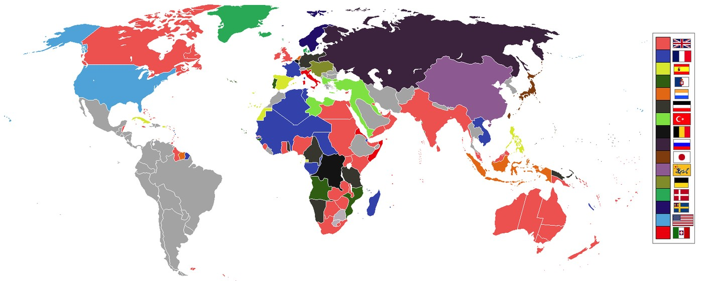

6.8 Causation in the Imperial Age from 1750 to 1900
- LO-A: The big picture: industrialization created imperialism — Unit 6 is titled “Consequences of Industrialization” for a reason. The Industrial Revolution (Unit 5) created the technological gap (Maxim guns, steamships, railways) that made large-scale conquest feasible, the economic demand for raw materials that made conquest profitable, and the ideological framework (Social Darwinism, nationalism) that made it seem justified. Every major Unit 6 topic connects back to the causal engine of industrialization. Four categories of causes — rank them for LEQ writing — Imperial expansion had multiple causes: (1) technological/military (industrialized weapons, steamships, railways); (2) economic (demand for raw materials and markets, commodity trade, investment opportunities); (3) ideological (Social Darwinism, civilizing mission, nationalism, religious conversion); (4) political (interstate competition, nationalism). For LEQ and SAQ responses, rank these causes and explain the connections between them. Effects of imperialism: a mixed balance sheet — Imperialism transformed the world: it produced export economies, ethnic diasporas, new political borders, resistance movements, and cultural exchanges. It also caused massive human suffering: the Congo’s 10 million deaths, the Irish Famine, the Trail of Tears, the Battle of Omdurman. Evaluating the “extent” of imperialism’s effects means acknowledging both the genuine transformations and the enormous human costs. Connecting Units 5 and 6: the key continuity — The AP exam frequently asks you to connect industrialization (Unit 5) and imperialism (Unit 6) using the causation reasoning skill. The strongest responses make specific causal connections: the steam engine → cheaper transportation → more profitable trade; quinine → disease resistance → interior Africa conquest possible; surplus capital → investment abroad → informal empire; industrial weapons → military advantage → rapid conquest. Know the mechanisms, not just the general claim.
Try each question before revealing the answer.
1. Topic 6.8 is titled “Causation in the Imperial Age.” Why does the AP exam include a “causation” topic at the end of each unit? What specific historical thinking skill is being tested?
2. A historian argues that the primary cause of 19th-century imperialism was economic — the demand for raw materials and markets created by the Industrial Revolution. A second historian argues that ideology was more important — without Social Darwinism, nationalism, and the civilizing mission, industrial nations wouldn’t have wanted empires. How would you evaluate these two arguments?
3. Which topics in Unit 6 most directly reflect the economic consequences of industrialization? Which most directly reflect the political consequences?
4. The AP exam often asks you to evaluate the “extent” of a historical claim. For Unit 6, how would you evaluate the “extent” to which imperialism was the defining force in shaping the modern world?
5. How did the migration patterns described in Topics 6.6 and 6.7 connect to the economic imperialism described in Topics 6.4 and 6.5? (This is a synthesis question connecting multiple Unit 6 topics.)
- Explain the causes and effects of imperial expansion from 1750 to 1900, using historical reasoning skills (especially causation) to construct and evaluate historical arguments
Tap a term for its definition.
-
Definition: The historical thinking skill that involves identifying causes and effects, distinguishing proximate (immediate) from deeper (long-term) causes, explaining the mechanisms connecting causes and effects, and evaluating the relative importance of different causal factors. Significance: AP exam essays (LEQ, SAQ) frequently require causal reasoning; a causation response must explain why and how , not just what happened.
-
Definition: A proximate cause is the immediate trigger (e.g., the cartridge incident that sparked the 1857 Rebellion); an underlying cause is the deeper structural condition that made the proximate cause significant (e.g., colonial exploitation and Indian resentment of Company rule). Significance: Strong historical analysis identifies both levels; the AP exam rewards responses that go beyond surface-level triggers to explain structural causes.
-
Definition: A medicine derived from the bark of the cinchona tree, effective against malaria. European extraction of quinine from South America and its widespread use from the 1840s allowed European troops to operate in tropical African and Asian environments without the devastating malaria mortality rates of earlier periods. Significance: A key technological factor enabling the Scramble for Africa — interior conquest had previously been impossible because European troops died at catastrophic rates from tropical disease.
-
Definition: Invented in 1884 by Hiram Maxim, the first fully recoil-operated automatic machine gun, capable of firing 500 rounds per minute. Significance: Exemplifies the military technology gap between industrialized and non-industrialized societies; its deployment at the Battle of Omdurman (1898) produced the 230:1 casualty ratio; Belloc’s lines (“We have got the Maxim Gun”) captured the asymmetry perfectly.
-
Definition: An economic framework describing the structural relationship between industrialized “core” nations (that manufacture and export finished goods, export capital) and non-industrialized “peripheral” regions (that supply raw materials, labor, and markets). Significance: The most influential model for understanding the global economic inequality created by the imperial age; connects Unit 6’s economic topics to 20th-century and contemporary global inequality.
-
Definition: The process by which colonized peoples achieved political independence from imperial powers, primarily between 1945 and 1975. Significance: The long-term political consequence of imperialism; the anticolonial movements that drove decolonization drew on the resistance traditions examined in Topic 6.3 and the nationalist ideologies that imperialism itself had spread.
-
Definition: The AP exam skill of connecting historical developments across time periods, geographic areas, or thematic categories to construct broader arguments. Significance: Topic 6.8 is explicitly a synthesis topic — it asks you to connect Topics 6.1–6.7 to each other and to Units 5 and 7, demonstrating understanding of the imperial age as a connected, causally coherent historical moment rather than a collection of separate events.
-
Definition: The historical reasoning skill that identifies what persisted and what transformed across a time period, explaining the mechanisms of both continuity and change. Significance: For Unit 6, key continuities include long-distance trade networks, existing state structures, and pre-existing cultural identities; key changes include the political map of Africa and Asia, the global commodity economy, and global migration patterns.
🧩 Why Did Imperialism Happen When It Did? The Causal Framework
The most important analytical question for Unit 6 is not “what happened” — you’ve learned that across Topics 6.1–6.7. The most important question is why: Why did the great age of imperial expansion happen in the second half of the 19th century specifically? Why did industrialized nations succeed in conquering most of the world within a generation? Why did the patterns of migration, economic extraction, and resistance take the specific forms they did?
The answer starts with the Unit 5 engine: industrialization. The CED places Unit 6 within the broader period “c. 1750–1900” and titles it “Consequences of Industrialization” for a reason. Without the Industrial Revolution, 19th-century imperialism on this scale was simply impossible. Industrial technology created a military gap between industrialized and non-industrialized societies that made rapid conquest feasible; industrial capitalism created the economic incentives that made it profitable; and the social anxieties and national competition generated by industrialization created the political pressures that made it feel necessary.
But industrialization was a necessary, not sufficient, cause. The specific form of imperialism — its racial ideology, its competitive structure, its particular victims and perpetrators — also required the ideological developments (Social Darwinism, nationalism, civilizing mission) and the specific political decisions made by individual governments and states. A complete causal account requires all four levels: technological, economic, ideological, and political.
⚙️ Level 1: The Technological-Military Cause
The most concrete cause of successful imperial expansion was military technology. Two innovations in particular made the conquest of interior Africa and Asia possible in ways that hadn’t been feasible before:
- Quinine and tropical medicine: Before the widespread availability of quinine (from South American cinchona bark, distributed to British troops from the 1840s), European soldiers sent to tropical Africa and Asia died at catastrophic rates from malaria and other tropical diseases. West Africa was called the “White Man’s Grave.” Quinine dramatically reduced European mortality rates in tropical environments, making sustained interior conquest militarily feasible for the first time.
- The Maxim gun and industrial weapons: Repeating rifles, modern artillery, and especially the Maxim gun (1884) created a devastating asymmetry between industrial armies and non-industrial ones. The Battle of Omdurman (1898) — 11,000 Mahdist soldiers killed versus 48 British deaths — exemplified this gap. Industrial weapons technology made rapid conquest not just possible but almost inevitable wherever colonial armies could be deployed.
- Steamships and railways: Steam-powered transportation allowed colonial armies to project power into continental interiors at unprecedented speed and scale, while also making the economic extraction of raw materials profitable (railways lowered the cost of moving bulk commodities to ports).

The world in 1900: European powers, the United States, and Japan controlled approximately 84% of the earth’s land surface, the product of the imperial expansion driven by industrialization, economic demand, and military technology from 1750 to 1900 (Google Gemini, 2025), commercially licensed. The world in 1900: European powers, the United States, and Japan controlled approximately 84% of the earth’s land surface, the product of the imperial expansion driven by industrialization, economic demand, and military technology from 1750 to 1900 (Google Gemini, 2025), commercially licensed.
💰 Level 2: The Economic Cause
Industrial capitalism created structural economic incentives for imperial expansion that operated alongside the military-technological factors:
- Raw material demand (Topic 6.4): Factory production required inputs that Europe didn’t produce in sufficient quantities. Cotton from Egypt and India; rubber from the Amazon and Congo; palm oil from West Africa; guano from Peru. This demand gave industrialized nations powerful economic incentives to control (formally or informally) the territories that produced these resources.
- Market access (Topic 6.5): Industrialization produced manufactured goods faster than domestic consumers could absorb them. Colonial markets provided outlets for surplus production. The Opium Wars were fundamentally about forcing China to remain open as a market for British goods and opium.
- Investment capital (Topic 6.5): The industrial economy generated surplus capital that needed profitable investment. British capital invested in Argentine railways, Chilean copper mines, and Egyptian cotton infrastructure was earning returns that domestic investment couldn’t match. Informal empire was economically rational capital allocation.
💡 Level 3: The Ideological Cause
Ideology transformed economic interest and military capability into political will. Without the ideological frameworks that made conquest seem justified, industrialized nations might have traded with non-industrialized ones without conquering them — as they had done in earlier centuries. The four ideologies of Topic 6.1 (Social Darwinism, civilizing mission, nationalism, religious conversion) did specific causal work:
- Social Darwinism made racial hierarchy seem like natural law, converting conquest from a morally uncomfortable choice into a biological inevitability.
- The civilizing mission reframed exploitation as charity, making colonial violence easier to sustain politically by giving it a moral rationale.
- Nationalism created competitive pressures that drove expansion beyond economic rationality: nations claimed territory partly to deny it to rivals, not just because they wanted it.
- Religious conversion mobilized missionary networks that provided institutional coverage for colonial expansion and generated domestic political constituencies who supported empire as a spiritual cause.
🏛️ Level 4: The Political Cause
Nationalism and interstate competition among European states created political logic for imperial expansion that operated independently of economic calculation. The Scramble for Africa accelerated because no major European power could afford to let rivals claim territory without competing: if Britain didn’t take Egypt, France might. If Germany got a colonial empire, Britain’s prestige suffered. This competitive political logic drove expansion into territories that were economically marginal, creating the “often-irrational speed” of 1880s colonization.
Domestic politics also mattered. Colonial ventures had to be funded by parliaments and supported by publics. Ideological frameworks (civilizing mission, nationalism) made colonial spending politically sustainable. Missionaries and explorers generated public enthusiasm. Newspapers romanticized the “adventure” of empire. The political economy of colonialism — who benefited from it domestically, who lobbied for it, who funded it — shaped which territories were colonized and how.
⚖️ Effects of Imperialism: A Balance Sheet
For the AP exam, evaluating the “extent” of imperialism’s effects requires acknowledging both the genuine transformations and the enormous human costs. A strong analytical response avoids both uncritical celebration of “progress” and one-sided condemnation.
What imperialism transformed (broadly):
- The political map: Africa’s 50 colonial territories, India under the British Raj, Indonesia under the Dutch — entire continental political structures reshaped
- The global economy: core-periphery relationships, commodity trade networks, and investment patterns created in the imperial era shape global economic inequality today
- Migration and diaspora: Chinese communities in Singapore, Indian communities in Trinidad, Irish communities in Boston — permanently altered demographic landscapes worldwide
- Cultural exchange: languages (English, French, Spanish spread globally), religions (Christianity and Islam spread through imperial networks), technologies (railways, telegraphs, modern medicine) introduced to new regions
- Anticolonial nationalism: the very ideologies Europeans used to justify empire — national self-determination, human rights — were turned against them by colonized peoples in the 20th century
The human costs (irreducible):
- The Congo Free State: estimated 10 million deaths from violence, famine, and disease under Leopold II’s rubber regime
- The Trail of Tears: 4,000 Cherokee deaths from forced removal
- The Xhosa Cattle-Killing: approximately 40,000 deaths from the famine that followed
- The Battle of Omdurman: 11,000 Mahdist soldiers killed in an afternoon by machine guns
- The Irish Famine: 1 million deaths, worsened by colonial economic policy
- The destruction of thousands of indigenous political, social, and cultural systems that had existed for centuries
🔗 Connecting Units 5 and 6: The Chain of Causation
The AP exam frequently rewards responses that connect Unit 6’s imperialism to Unit 5’s industrialization with specific causal mechanisms. Here are the most important chains to know:
- Steam engine (Unit 5) → steamships (Unit 6) → cheaper transportation of raw materials and troops → profitable extraction and rapid military projection into colonial interiors
- Industrial weapons manufacturing (Unit 5) → Maxim gun, modern artillery (Unit 6) → overwhelming military advantage → rapid conquest feasible regardless of indigenous resistance
- Tropical medicine / quinine (Unit 5 spin-off) → reduced European mortality (Unit 6) → interior Africa conquest feasible for the first time
- Industrial demand for raw materials (Unit 5) → export economies in cotton, rubber, guano (Unit 6.4) → core-periphery economic relationships → global inequality
- Social Darwinism / nationalism (Unit 5 ideological context) → justifications for imperialism (Unit 6.1) → political will to sustain expensive colonial ventures → Scramble for Africa
- Industrialization creates surplus capital (Unit 5) → investment in Latin America, Asia (Unit 6.5) → informal empire without formal colonization → core-periphery relationships without direct governance costs
These videos will help you review Causation in the Imperial Age from 1750 to 1900 and solidify key concepts before your exam.
- European nationalism was the most important driver of imperial expansion because it motivated competitive territorial acquisition
- The Industrial Revolution created the technological conditions that made rapid colonial conquest feasible, regardless of other causal factors
- Economic demand for raw materials was the primary driver of European colonization because it made conquest profitable
- The civilizing mission ideology was the most important cause because it gave European nations a moral justification for conquest
- The ideological frameworks of European political thought — nationalism, self-determination, human rights — were adapted by colonized peoples as tools of anticolonial resistance
- Colonial education successfully Westernized Indian elites and converted them to support for British rule
- British colonial rule was fundamentally more benevolent than other European imperial systems because it spread democratic values
- The Industrial Revolution spread democratic governance as well as technological innovation to colonized regions
- The spread of European nationalism, which motivated both economic expansion and demographic movement
- The Berlin Conference’s formalization of European spheres of influence across Africa and Asia
- The Industrial Revolution’s creation of demand for raw materials, markets, and labor in global production zones
- Social Darwinism’s ideological framework, which justified both economic exploitation and migration control
- A new state created on the periphery to resist colonial pressure (KC-5.2.II.C)
- A freely chosen migration movement of Chinese workers away from colonized regions
- Economic imperialism, as Chinese merchants organized to reclaim control of treaty port commerce
- A rebellion influenced by religious and cultural ideas responding to multiple forms of imperial encroachment (KC-5.3.III.E)
- The long-term consequences of the political and territorial structures created by 19th-century imperialism continue to shape global conflicts in the present day
- The effects of 19th-century imperialism were limited to the period before World War I and did not shape the contemporary world
- Decolonization in the mid-20th century successfully eliminated the political consequences of 19th-century imperial borders
- The primary cause of 21st-century political conflicts is economic inequality rather than colonial-era political boundaries
Answer parts A, B, and C. Each requires a separate short response. Do not write a full essay.
Part A
Briefly explain ONE specific way industrialization contributed to the development of imperialism in the period 1750–1900, using a specific example from Unit 6.
Part B
Briefly explain ONE way in which indigenous or colonized peoples’ responses to imperialism created consequences that extended beyond the period 1750–1900.
Part C
Briefly explain how migration patterns (Topics 6.6–6.7) were connected to economic developments (Topics 6.4–6.5) in the period 1750–1900.
Write a full essay with a thesis, contextualization, evidence, and historical reasoning. Use causation as your primary reasoning skill. This prompt requires you to argue a qualified claim: acknowledge industrialization’s causal role while explaining other contributing factors. A strong response will rank causes and explain the mechanisms connecting industrialization to imperial expansion.